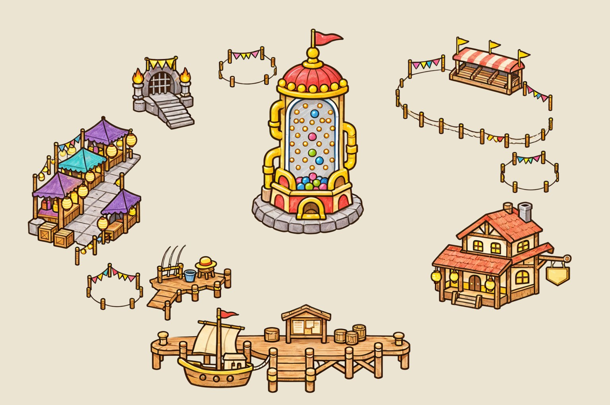
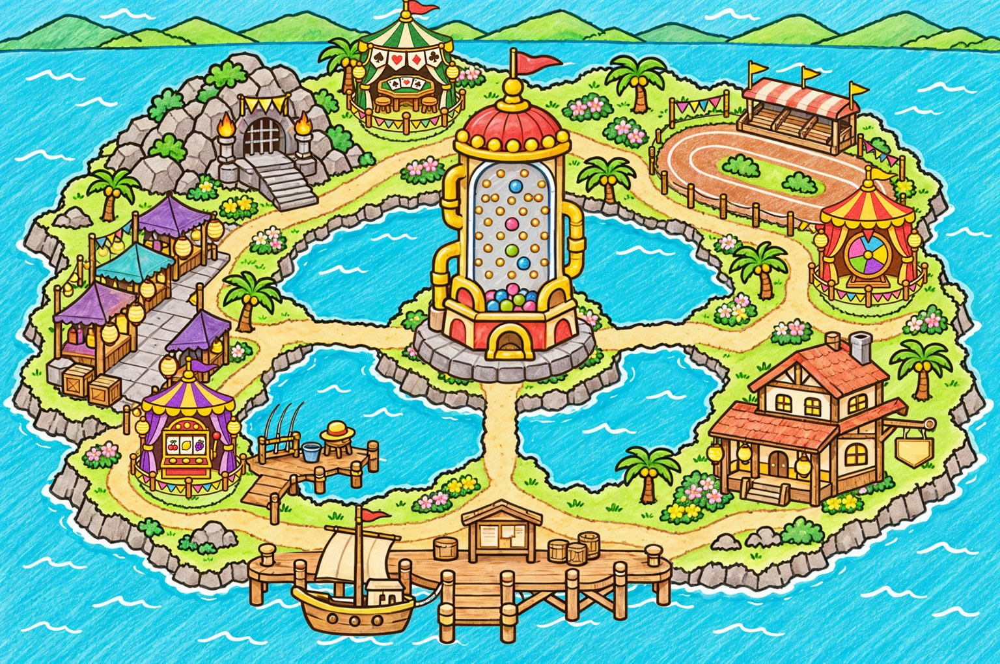
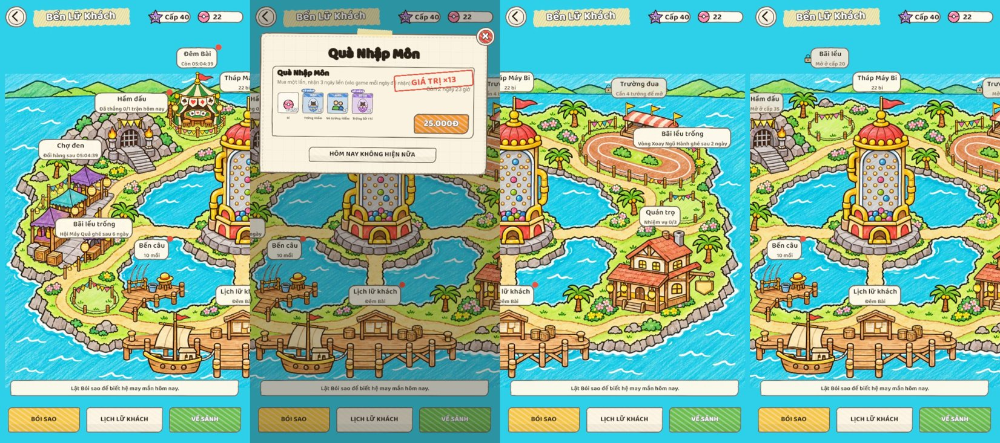

Đảo Casino (hướng B) gen theo lớp
2. Lớp công trình (đúng chỗ, đúng cỡ; nền trong suốt)

3. Ghép lại + 3 lều sự kiện trên 3 bãi (lều chỉ hiện khi sự kiện mở)

4. Trong Unity: kéo trái, giữa, kéo phải, cấp 9 (lều và hầm đấu còn khoá)
